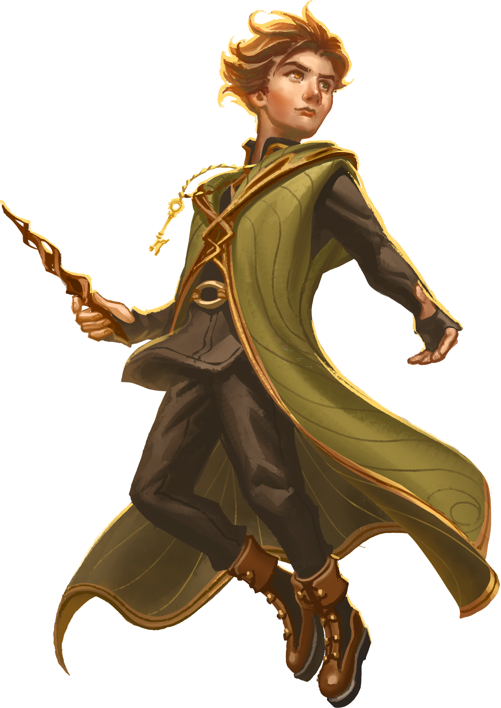

O universo Marvin Grinn.
VIAJE POR UM MUNDO MAGICO DE AVENTURAS.
Acompanhe a aventura do nosso bruxinho Marvin Grinn.

Acompanhe a aventura do nosso bruxinho Marvin Grinn.
Armando Ribas Neto é gaúcho, casado, pai de duas filhas, publicitário, empresário e escritor.
Sua trajetória com os livros começou ainda criança, escrevendo contos e crônicas, alguns publicados em coletâneas e rendendo premiações.
Após mais de 30 anos escrevendo profissionalmente para filmes publicitários, resolveu que era o momento de um trabalho autoral e começou, em 2014, a escrever a série de aventuras do personagem Marvin Grinn.
Além de escrever sobre magia e fantasia, Armando também se considera um legítimo artesão de varinhas mágicas.
Marvin Grinn vê sua vida mudar ao descobrir que é portador de um livro repleto de segredos e possibilidades mágicas. Sozinho e cheio de perguntas sobre seu misterioso passado e sua família, o garoto de 13 anos inicia sua jornada em busca da verdade, e logo se vê envolvido em uma rixa familiar que perdura por séculos.
Veja aonde adquirirA busca de Marvin continua, e um novo portal vai conduzir as aventuras do menino de olhar de duas cores a outro elemental: a água. E em um mundo submerso, cercado por intrigas palacianas e um romance proibido, Marvin Grinn enfrentará perigos do oceano e da superfície, combatendo tubarões monstruosos e guerreiros tritões, entre o melhor e o pior da magia Atlante. Tudo para resgatar seu passado e reencontrar a família perdida.
Veja aonde adquirirNa jornada de Marvin Grinn, um novo portal se abre: o do ar. O jovem bruxo terá que retornar à capital para enfrentar suas memórias recentes, em um confronto de vida e morte. Marvin precisará de muita coragem para dominar o novo elemento, que o levará às alturas e ao combate com as temíveis harpias, guardiãs de dotados engaiolados entre eles a amiga Melina e o misterioso ocupante da gaiola dourada.
Veja aonde adquirirSe você curte uma boa história de fantasia e aventura, leia “Marvin Grinn e a Chave Mestra”. Ao final você falará aquela famosa frase: “Por que não conheci esse livro antes”. Eu li e aprovei; vale muito a pena. Recomendo!
Leitura Enigmática - SP
Essa história mágica e maravilhosa, começa na cidade natal de meu pai, Santa Maria, no Rio grande do Sul. Eu fui transportada, e hoje quase trinta anos depois, eu voltei a escrever. O meu caro amigo Marvin, usou sua chave mestra e destrancou meu coração infantil, que aguardava uma chance de escrever de novo. Hoje já estou finalizando um livro, tenho 3 iniciadas, e mais 5 com o roteiro completo. Publicarei um dia? Acredito que não. Mas isso me fez muito feliz. Obrigada Marvin, Obrigada Armando Ribas.
Gestora de RH e leitora - RJ
Marvin Grinn é o tipo de história que te prende desde a primeira página e te deixa sempre curioso para saber qual rumo a história terá. Tem magia com os quatro elementos, tem bruxaria, tem uma guerra que dura anos, tem muitos mistérios, tem tudo que um leitor de fantasia ama!
Athena Livraria - RS